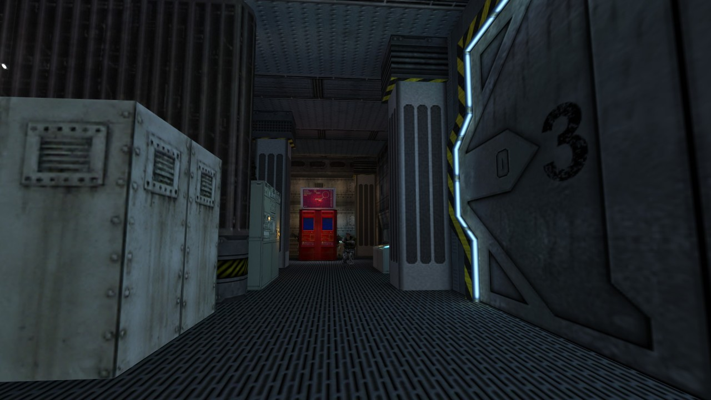

Radix from Project: Quantum Leap by Unquenque
Classic of the Month at RunThinkShootLive - http://www.runthinkshootlive.com/posts/radix/
I’m streaming this in an hour at twitch.tv/planetphillip Yes, my own mod - but it’ll have tons of developer commentary and info, plus looks at other maps that inspired it!